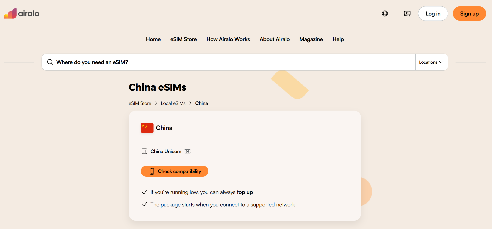
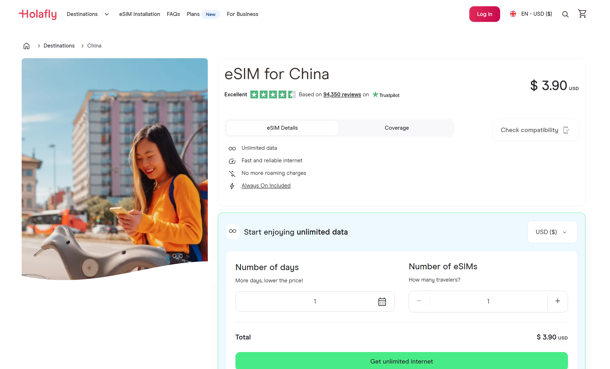
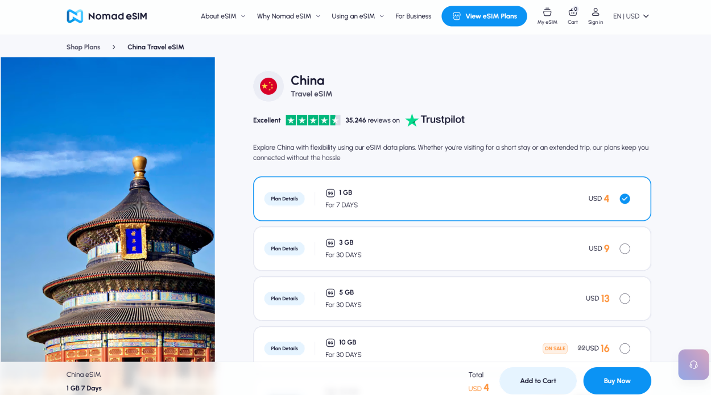
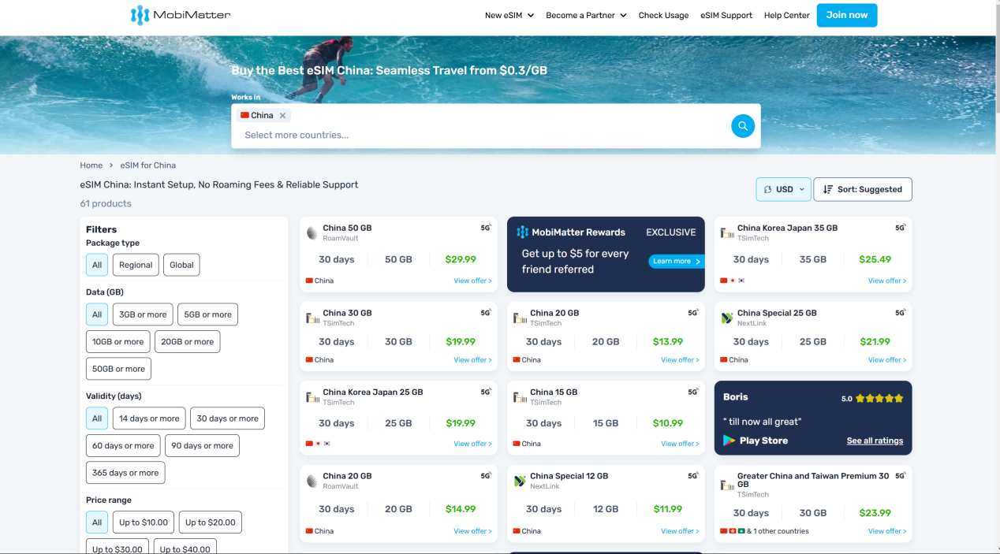

How to Get Internet in China
Without Losing Your Mind
TL;DR — The Short Version
- eSIM is the best option for most travelers — install before you fly, connect the moment you land
- International roaming usually bypasses the Great Firewall — often works without a VPN for Instagram, Google, WhatsApp
- A local Chinese SIM gives you a phone number (useful for apps) but does NOT unblock Western websites
- Portable WiFi is bulky, needs charging, and still blocked — skip it unless you're traveling with a group
- You still need a VPN if you're on Chinese internet (local SIM or WiFi). Roaming and most eSIMs don't need one.
The Moment Every Traveler Dreads
You land at Shanghai Pudong. You've been on a plane for 12 hours. You open your phone — and nothing loads. Google Maps is frozen. WhatsApp shows "connecting..." — Instagram is a white screen. Everything you normally use — Google, Gmail, WhatsApp, YouTube — is blocked. And your home SIM? It'll burn through your roaming allowance in about 30 seconds.
This problem has four solutions. But here's the thing: some only give you a connection. Some give you access — meaning Google and Instagram work without a VPN. I'll tell you which is which, and exactly which one to pick.
The Four Ways to Get Online in China
Best for most Option 1: eSIM (Travel Data Plan)
An eSIM is a digital SIM card — no physical chip, no store visit. You buy a data plan online, scan a QR code, and your phone connects to a Chinese network (usually China Unicom or China Mobile) the moment you land. It's the cleanest, fastest option for 90% of travelers.
Why it's the best option:
- Install before you fly. Buy the plan at home, activate it on the plane. When you land, it just works — no airport SIM counter, no paperwork, no passport registration.
- No physical SIM swap. Your home SIM stays in your phone. You keep your regular number for SMS and calls (incoming texts are usually free). The eSIM handles data only.
- Many travel eSIMs route data through Hong Kong or Singapore. This usually allows access to Google, WhatsApp, Instagram, and Gmail without a VPN — but it's not a permanent guarantee. Routing policies and carrier agreements can change, so always test after installation and have a VPN installed as backup.
- Affordable. Typical pricing: $8–15 for 3 GB / 7 days, $25–35 for 10 GB / 30 days. For most 1–2 week trips, $15–25 covers you.
The downside:
- No Chinese phone number. This matters for a few things — registering for some apps (Meituan, some bike-sharing), receiving SMS verifications. For most tourists, this is a minor inconvenience, not a dealbreaker. Alipay works fine without a Chinese number.
- Your phone must support eSIM. Most iPhones from XS/XR onward do. Most recent flagship Androids (Samsung S20+, Pixel 4+, recent Huawei) do. Check your model before buying.
Recommended eSIM Providers (As of 2026)
I've tested these personally and with visiting friends. The landscape changes, so treat this as a snapshot — but the brands below have been consistently reliable for China travel.
⚠️ Prices and routing can change. Always check the provider's China plan details before buying.
| Provider | Best For | Price (7 days / 3 GB) | Routes outside GFW? | Notes |
|---|---|---|---|---|
| Airalo | Overall reliability | ~$9 | — Yes | Largest eSIM marketplace. Their "China" and "Chinacom" plans route through HK. App is clean and easy to use. Good support. |
 |
||||
| Holafly | Unlimited data | ~$27.50 for 7 days (unlimited) | — Yes | Unlimited data plans. More expensive than capped plans but zero stress about running out. Good for heavy users (video calls, uploading photos). |
 |
||||
| Nomad | Budget | ~$7 | — Yes | Often the cheapest. Good coverage. Their China plans use China Unicom's network. Sometimes discounted on their app. |
 |
||||
| MobiMatter | Long trips | ~$9 (30 days / 10 GB) | — Yes | Excellent value for longer stays. 30-day plans are significantly cheaper per GB than 7-day plans from competitors. |
 |
||||
Secret weapon Option 2: International Roaming (Your Home Carrier)
This is the option most people overlook — and it might be the smartest choice, depending on your carrier. When you roam on your home carrier's plan in China, your data is tunneled back to your home country before reaching the internet. This means the Great Firewall is usually bypassed. Google, Instagram, WhatsApp — most apps and services work like they do at home.
The catch: traditional roaming is expensive. But the landscape has changed. Many carriers now offer affordable travel passes:
- US carriers: T-Mobile includes international data on most plans (up to 5GB high-speed, then 256kbps) — usable for messaging and maps. Verizon's TravelPass is $12/day. AT&T International Day Pass is $12/day.
- UK carriers: Three includes China in its "Go Roam" destinations on some plans (check your plan dates — newer plans may have different terms). EE and Vodafone offer daily passes (£5–7/day).
- EU carriers: Many European carriers (Orange, Vodafone, Deutsche Telekom) include or offer affordable China roaming. Check your plan.
- Australia / NZ: Vodafone AU's $5/day roaming includes China. Optus and Telstra have similar passes.
Who this is best for: Short trips (3–5 days), business travelers who need their home number for calls, and anyone who wants zero setup — it just works the moment you land. At $10–12/day it's not the cheapest, but for a 3-day trip the convenience might be worth $36. For a 2-week trip, eSIM is much cheaper.
For long stays Option 3: Local Chinese SIM Card
Walk into any China Mobile, China Unicom, or China Telecom store with your passport, and you can buy a local SIM card. It's straightforward — the staff will register your passport, take a photo, and hand you a working SIM.
What you get:
- A real Chinese phone number (+86) — useful for registering on apps, receiving verification codes, and giving to hotels or local contacts
- Cheap data — typically ¥50–100/month ($7–14) for 20–50 GB
- Fast speeds on China's excellent 4G/5G networks
The critical catch: A local Chinese SIM connects you to China's internet. Google, Instagram, WhatsApp, Gmail, YouTube —usually blocked. You likely need a VPN to access Western services. And setting up a VPN on a phone that just arrived in China can be tricky — many VPN websites are blocked, so you need to install the VPN app before you switch to the Chinese SIM.
Who this is best for: Long-term stays (1+ months), digital nomads, students, anyone who needs a local phone number for daily life. For a 1–2 week tourist trip, the hassle isn't worth it — get an eSIM instead.
Group travel Option 4: Portable WiFi Hotspot
You rent a small pocket-sized device (like a mini router) that connects to China's 4G/5G networks and broadcasts a WiFi signal. Multiple people can connect to it. You can pick it up at the airport or have it delivered to your hotel.
Pros: Multiple devices can connect (laptop + phone + tablet), no setup on your phone, good for families or groups. Some rental services include a VPN built into the device.
Cons: Another thing to carry and charge. Daily rental fees (¥30–50/day). If it runs out of battery, you're offline. Easy to lose or forget to return. Without a built-in VPN, most Western sites are still blocked. And honestly — with eSIMs being so easy now, carrying a separate gadget feels like 2016.
Who this is best for: Families with kids who all need WiFi, people with older phones that don't support eSIM, or anyone who needs to connect a laptop constantly. For solo travelers and couples: skip this, get an eSIM.
The Comparison at a Glance
| eSIM | Roaming | Local SIM | Portable WiFi | |
|---|---|---|---|---|
| Setup required | Install before trip | None | Visit store + passport | Rent + pickup |
| Routes outside GFW? | — Usually | — Yes | — No, needs VPN | — No, needs VPN* |
| Chinese phone number | — No | — Your home # | — Yes | — No |
| Cost (7-day trip) | $8–20 | $35–70 | $7–14 | $20–50 |
| Best for | 1–2 week trips | Short trips, business | 1+ month stays | Families, groups |
* Some rental services include a VPN built into the device — ask before renting.
"But I Also Need a VPN, Right?"
It depends on which option you choose.
- eSIM (routed through HK/Singapore): Usually no VPN needed — these plans typically route outside China's firewall. But test after installation, and keep a VPN installed as backup. Routing can change between providers and plan renewals.
- International roaming: No VPN needed. Your data is tunneled home.
- Local Chinese SIM: YES — you absolutely need a VPN. Without one, you can't access Google, Instagram, WhatsApp, Gmail, YouTube, or any Western site. Install and test your VPN before inserting the Chinese SIM.
- Portable WiFi: YES — same as local SIM. Unless the rental includes a VPN.
Even if your eSIM or roaming plan gives you access right now, I still recommend having a VPN installed. Hotel WiFi and café WiFi in China are on Chinese internet — meaning they're firewalled. If your eSIM data runs out, or your plan renews with a different routing, you'll want a VPN ready. See our full guide:
—How to Stay Connected in China — Full VPN & Internet Guide
What I Actually Recommend
After years of watching friends go through this, here's my simple decision tree:
🏆 The winning combo (for 90% of travelers)
eSIM for data + a VPN app installed as backup.
Buy a 7-day or 15-day eSIM from Airalo or Holafly before your flight. Install a VPN at the same time — you'll need it for hotel WiFi, and as a fallback if your eSIM's routing changes. When you land, your phone connects automatically. In most cases, Google Maps and WhatsApp work immediately. You walk out of the airport already online — no SIM shop, no paperwork, no stress.
Total cost for a 10-day trip: $15–25 for eSIM data + a few dollars for a VPN subscription. That's less than what most people spend on airport coffee and snacks.
Setup Checklist — Do This Before Your Flight
- Check if your phone supports eSIM. Google "[your phone model] eSIM" or check Settings — Cellular/Mobile —"Add eSIM." If you see that option, you're good.
- Buy an eSIM plan. Download Airalo, Holafly, or Nomad from your app store. Buy a China plan. You'll get a QR code via email and in the app.
- Install the eSIM. Follow the app instructions. It takes 2 minutes. Label it "China Travel" so you can find it later.
- Install and test a VPN. Even if you don't think you'll need it. Download it at home where the website isn't blocked. Test it. Make sure you know how to turn it on.
- Configure your phone. Set your eSIM as the data line. Keep your home SIM active for calls and SMS. Turn off data roaming on your home SIM to avoid surprise charges.
- Download offline maps. In Google Maps or Apple Maps, download the offline map for the city you're visiting. Just in case.
FAQ — Questions Every First-Timer Asks
"Can I use WhatsApp in China?"
Yes — if you're on an eSIM that routes through Hong Kong, or using international roaming. If you're on Chinese WiFi or a local SIM, you need a VPN. WhatsApp is blocked on China's domestic internet.
"Does Google Maps work in China?"
Google Maps loads (it's not blocked), but the map data is unreliable — streets can be inaccurate, and transit directions are missing. Use Apple Maps (usually works much better in China) or Amap (高德地图, Chinese-only but the best map data). Both are free.
"Can I buy an eSIM after I arrive in China?"
Technically yes — the eSIM provider's website might be accessible. But if you're on airport WiFi (which is Chinese internet), some eSIM provider sites might be blocked or slow. Buy it before you fly. It's one less thing to worry about.
"What if my phone doesn't support eSIM?"
If your phone is older and doesn't support eSIM, your best options are: (1) international roaming from your home carrier if the price is reasonable, or (2) buy a local SIM at the airport after you land. For option 2, install a VPN before swapping the SIM. If neither works, a portable WiFi rental from the airport is the fallback.
"I'm visiting for 3 months. What should I do?"
Get a local Chinese SIM for the Chinese phone number and cheap data (¥50–100/month). Install a reliable VPN before you arrive. Use the VPN whenever you need Google, Instagram, WhatsApp, etc. For the first few days, you might want an eSIM too — so you're online immediately while you sort out the local SIM.
You'll Also Need These Guides
Getting internet is step one. Here's what to set up next:
Landing Day: Your 60-Second Phone Checklist
You just landed. Do these things in this exact order, and you'll be online before you reach baggage claim:
- Turn off Airplane Mode. Your eSIM (if you installed one) will connect automatically within 30–60 seconds.
- Verify your connection. Open google.com. If it loads, your eSIM or roaming is routing outside China's firewall. If it doesn't load, turn on your VPN.
- Turn OFF data roaming on your HOME SIM. Settings — Cellular —[your home line] — Data Roaming — Off. This prevents surprise $500 bills.
- Open your map app. Apple Maps or Amap — not Google Maps. Check your route to the hotel. Screenshot it for offline access just in case.
- Message home. WhatsApp or iMessage should work if you're on eSIM/roaming. Tell someone you landed safely.
Get the Free China Arrival Checklist
The exact setup guide I send to friends before they visit China. eSIM comparisons, VPN picks, and the step-by-step phone checklist — all in one PDF.
Get the Free Checklist